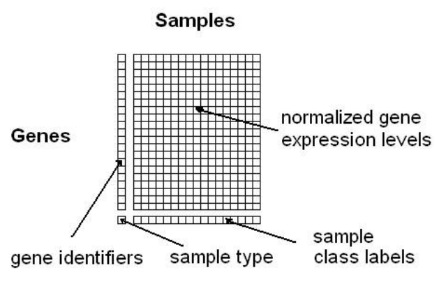
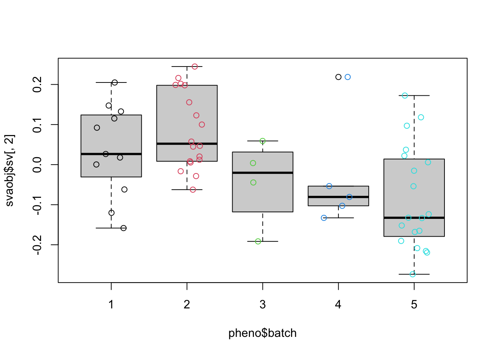
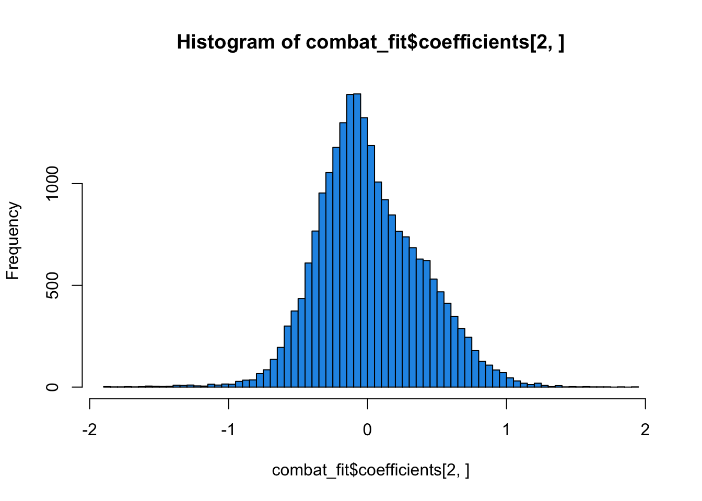
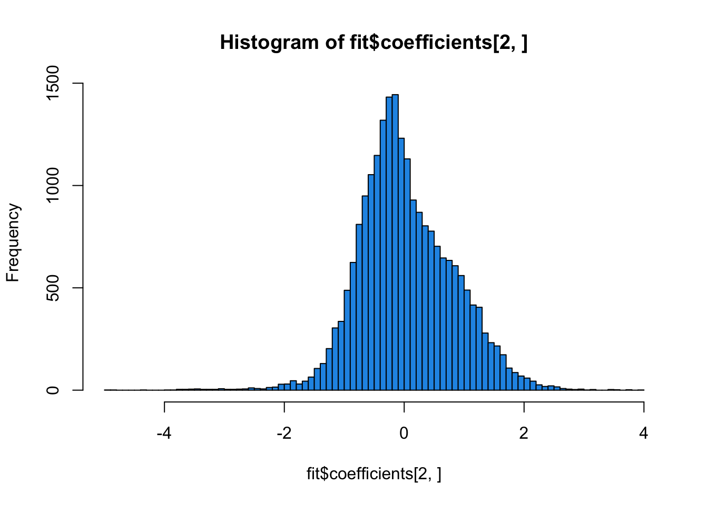
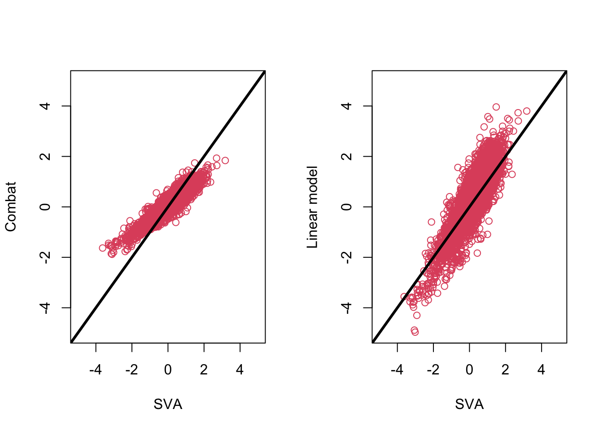

![]()
What is batch effect?
Batch effects are sub-groubs of measurements that have qualitatively different behaviour across conditions and unrelated to the biological or scientific variables in a study. - Experiments run on different time - Different technician - Differnt doing the sample preparation - Sequencing at a differnt institute - Prepare the sample at different timepoint - Different lots of reagents, chips or instruments …
All of these factors are considered to be factors as batches
Why is batch effect a problem
- Not biological difference
- Just the other factors are taking actions, and are showing differences
- Most of the time, batch effect deviate our finding from the real biological relevant information
Try our best to eliminate batch effect to get a real difference between conditions!
SVA package for removing batch effects
The assumption is that you will be trying to analyze the association between the variables of interest and gene expression, adjusting for the adjustment variables
Setting up the data from an ExpressionSet
- The data should be a matrix with features in the rows and samples in the columns.
- The data should be standardized before applying for correction.

### load data
data(bladderdata)
### variable data
pheno <- pData(bladderEset)
class(pheno)
## [1] "data.frame"
head(pheno, n = 5)
## sample outcome batch cancer
## GSM71019.CEL 1 Normal 3 Normal
## GSM71020.CEL 2 Normal 2 Normal
## GSM71021.CEL 3 Normal 2 Normal
## GSM71022.CEL 4 Normal 3 Normal
## GSM71023.CEL 5 Normal 3 Normal
### expression data matrix
edata <- exprs(bladderEset)
class(edata)
## [1] "matrix" "array"
head(edata[, 1:5])
## GSM71019.CEL GSM71020.CEL GSM71021.CEL GSM71022.CEL GSM71023.CEL
## 1007_s_at 10.115170 8.628044 8.779235 9.248569 10.256841
## 1053_at 5.345168 5.063598 5.113116 5.179410 5.181383
## 117_at 6.348024 6.663625 6.465892 6.116422 5.980457
## 121_at 8.901739 9.439977 9.540738 9.254368 8.798086
## 1255_g_at 3.967672 4.466027 4.144885 4.189338 4.078509
## 1294_at 7.775183 7.110154 7.248430 7.017220 7.896419
### create full model matrix, including both the adjustment variables and the variable of interest (cancer status)
mod <- model.matrix(~ as.factor(cancer), data = pheno)
### Create null model matrix, ontains only the adjustment variables.
mod0 <- model.matrix(~ 1, data = pheno) Eestimate batch effect and other artifacts using sva
### identify the number of latent factors that need to be estimated
n_sv <- num.sv(edata, mod, method = "leek")
n_sv
## [1] 2
## estimate the surrogate variables
svaobj <- sva(edata, mod, mod0, n.sv = n_sv)
## Number of significant surrogate variables is: 2
## Iteration (out of 5 ):1 2 3 4 5
str(svaobj)
## List of 4
## $ sv : num [1:57, 1:2] -0.02717 -0.00618 0.07737 -0.00114 -0.02062 ...
## $ pprob.gam: num [1:22283] 0.999 0.977 1 1 1 ...
## $ pprob.b : num [1:22283] 0.9956 0.9998 0.0702 0.9998 1 ...
## $ n.sv : num 2
summary(lm(svaobj$sv ~ pheno$batch))
## Response Y1 :
##
## Call:
## lm(formula = Y1 ~ pheno$batch)
##
## Residuals:
## Min 1Q Median 3Q Max
## -0.26953 -0.11076 0.00787 0.10399 0.19069
##
## Coefficients:
## Estimate Std. Error t value Pr(>|t|)
## (Intercept) -0.018470 0.038694 -0.477 0.635
## pheno$batch 0.006051 0.011253 0.538 0.593
##
## Residual standard error: 0.1345 on 55 degrees of freedom
## Multiple R-squared: 0.00523, Adjusted R-squared: -0.01286
## F-statistic: 0.2891 on 1 and 55 DF, p-value: 0.5929
##
##
## Response Y2 :
##
## Call:
## lm(formula = Y2 ~ pheno$batch)
##
## Residuals:
## Min 1Q Median 3Q Max
## -0.23973 -0.07467 -0.02157 0.08116 0.25629
##
## Coefficients:
## Estimate Std. Error t value Pr(>|t|)
## (Intercept) 0.121112 0.034157 3.546 0.000808 ***
## pheno$batch -0.039675 0.009933 -3.994 0.000194 ***
## ---
## Signif. codes: 0 '***' 0.001 '**' 0.01 '*' 0.05 '.' 0.1 ' ' 1
##
## Residual standard error: 0.1187 on 55 degrees of freedom
## Multiple R-squared: 0.2248, Adjusted R-squared: 0.2107
## F-statistic: 15.95 on 1 and 55 DF, p-value: 0.0001945
boxplot(svaobj$sv[, 2] ~ pheno$batch)
points(svaobj$sv[, 2] ~ jitter(as.numeric(pheno$batch)), col = as.numeric(pheno$batch))
dev.off()
## null device
## 1Adjusting for surrogate variables using f.pvalue function
### calculate the parametric F-test p-values for each row of a data matrix
pvalues <- f.pvalue(edata, mod, mod0)
### adjust them for multiple teseting
qvalues <- p.adjust(pvalues, method = "BH")Nearly 70% of the genes are strongly differentially expressed at an FDR of less than 5% between groups.
This number seems artifically high.
Get the adjusted p-values and q-values accounting for surrogate variables.
Adjusting for surrogate variables using the limma
### fit the linear model with the surrogate variabels
fit <- lmFit(edata, modsv)
### compute the contrasts between cancer/normal terms
contrast_matrix <- cbind(
"C1" = c(-1, 1, 0, rep(0, svaobj$n.sv)),
"C2" = c(0, -1, 1, rep(0, svaobj$n.sv))
)
fit_contrasts <- contrasts.fit(fit, contrast_matrix)
### calculate the test statistics
eb <- eBayes(fit_contrasts)
topTableF(eb, adjust = "BH")
## topTableF is obsolete and will be removed in a future version of limma. Please considering using topTable instead.
## C1 C2 AveExpr F P.Value adj.P.Val
## 207783_x_at -13.45607 0.26592268 12.938786 8622.529 1.207531e-69 1.419929e-65
## 201492_s_at -13.27594 0.15357702 13.336090 8605.649 1.274450e-69 1.419929e-65
## 208834_x_at -12.76411 0.06134018 13.160201 6939.501 4.749368e-67 3.527673e-63
## 212869_x_at -13.77957 0.26008165 13.452076 6593.346 1.939773e-66 1.080599e-62
## 212284_x_at -13.59977 0.29135767 13.070844 5495.716 2.893287e-64 1.289423e-60
## 208825_x_at -12.70979 0.08250821 13.108072 5414.741 4.350100e-64 1.615555e-60
## 211445_x_at -10.15890 -0.06633356 9.853817 5256.114 9.845076e-64 3.133969e-60
## 213084_x_at -12.59345 0.03015520 13.046529 4790.107 1.260201e-62 3.510132e-59
## 201429_s_at -13.33686 0.28358293 12.941208 4464.995 8.675221e-62 2.147888e-58
## 214327_x_at -12.60146 0.20934783 11.832607 4312.087 2.257025e-61 5.029329e-58Adjusting for known batches using Combat
ComBat returns a “cleaned” data matrix after batch effects have been removed. Here we pass a model matrix with any known adjustment variables and a second parameter that is the batch variable.
### get known batch variable
batch <- pheno$batch
### model matrix
modcombat <- model.matrix(~1, data = pheno)
modcancer <- model.matrix(~cancer, data = pheno)
### Using parametric empirical Bayesian adjustments.
combat_edata <- ComBat(
dat = edata,
batch = batch,
mod = modcombat,
par.prior = TRUE, # performs parametric empirical Bayesian adjustment
# par.prior = FALSE, # performs non-parametric empirical Bayesian adjustment
prior.plots = FALSE,
mean.only = FALSE, # only adjust the mean of the batch effects across batches
ref.batch = NULL
)
### significance analysis
pvalue_combat <- f.pvalue(combat_edata, mod, mod0)
qvalue_combat <- p.adjust(pvalue_combat, method = "BH")
combat_fit <- lm.fit(modcancer, t(combat_edata))
hist(combat_fit$coefficients[2, ], col = 4, breaks = 100)
Removing known batch effects with a linear model
In this case, we use two models. - One with the variable we care about - cancer status - the other is just the known adjustment variables, in this case, we assume none
mod_batch <- model.matrix(~as.factor(cancer) + as.factor(batch), data = pheno)
mod0_batch <- model.matrix(~as.factor(batch), data = pheno)
pvalues_batch <- f.pvalue(edata, mod_batch, mod0_batch)
qvalues_batch <- p.adjust(pvalues_batch, method = "BH")
fit <- lm.fit(mod_batch, t(edata))
hist(fit$coefficients[2, ], col = 4, breaks = 100)
Comparing ComBat and linear adjustment
We can compare the estimated coefficients from Combat and linear adjustment by looking at the right coefficients for each model.
### Add the surrogate variables to the model matrix and perform model fit
modsv <- cbind(mod, svaobj$sv)
fitsv <- lm.fit(modsv, t(edata))
### Compare the fit from surrogate variable analysis to the other two
par(mfrow = c(1, 2))
plot(
fitsv$coefficients[2,], combat_fit$coefficients[2, ],
col = 2, xlab = "SVA", ylab = "Combat", xlim = c(-5, 5), ylim = c(-5, 5)
)
abline(c(0, 1), col = 1, lwd = 3)
plot(
fitsv$coefficients[2,], fit$coefficients[2, ],
col = 2, xlab = "SVA", ylab = "Linear model", xlim = c(-5, 5), ylim = c(-5, 5)
)
abline(c(0, 1), col = 1, lwd = 3)
dev.off()
## null device
## 1Combat-seq for batch adjustment on RNA-seq count data
### expression matrix
count_matrix <- matrix(
rnbinom(400, size = 10, prob = 0.1),
nrow = 50, ncol = 8
)
### batch
batch <- c(rep(1, 4), rep(2, 4))
### adjust
adjusted <- ComBat_seq(
count_matrix,
batch = batch,
group = NULL
)
## Found 2 batches
## Using null model in ComBat-seq.
## Adjusting for 0 covariate(s) or covariate level(s)
## Estimating dispersions
## Fitting the GLM model
## Shrinkage off - using GLM estimates for parameters
## Adjusting the data
### specify one biological variable
group <- rep(c(0, 1), 4)
adjusted_counts <- ComBat_seq(
count_matrix,
batch = batch,
group = group
)
## Found 2 batches
## Using full model in ComBat-seq.
## Adjusting for 1 covariate(s) or covariate level(s)
## Estimating dispersions
## Fitting the GLM model
## Shrinkage off - using GLM estimates for parameters
## Adjusting the data
### multiple biological variabels
cov1 <- rep(c(0, 1), 4)
cov2 <- c(0, 0, 1, 1, 0, 0, 1, 1)
covar_mat <- cbind(cov1, cov2)
adjusted_counts <- ComBat_seq(
count_matrix,
batch = batch,
group = NULL,
covar_mod = covar_mat
)
## Found 2 batches
## Using null model in ComBat-seq.
## Adjusting for 2 covariate(s) or covariate level(s)
## Estimating dispersions
## Fitting the GLM model
## Shrinkage off - using GLM estimates for parameters
## Adjusting the dataVariance filtering to speed computations
n_sv <- num.sv(edata, mod, vfilter = 2000, method = "leek")
svaobj <- sva(edata, mod, mod0, n.sv = n_sv, vfilter = 2000)
## Number of significant surrogate variables is: 46
## Iteration (out of 5 ):1 2 3 4 5Applying the fsva function to remove batch effects for prediction
### seprate data to traning and test set
set.seed(12354)
train_indicator <- sample(1:57, size = 30, replace = FALSE)
test_indicator <- (1:57)[-train_indicator]
train_data <- edata[, train_indicator]
test_data <- edata[, test_indicator]
train_pheno <- pheno[train_indicator, ]
test_pheno <- pheno[test_indicator, ]
### pamr package can be used to train a predictive model and test that prediction
mydata <- list(x = train_data, y = train_pheno$cancer)
mytrain <- pamr.train(mydata)
## 123456789101112131415161718192021222324252627282930
table(
pamr.predict(mytrain, test_data, threshold = 2),
test_pheno$cancer
)
##
## Biopsy Cancer Normal
## Biopsy 4 0 0
## Cancer 0 15 0
## Normal 1 4 3
### calculate surrogate variables for training set
train_mod <- model.matrix(~cancer, data = train_pheno)
train_mod0 <- model.matrix(~1, data = train_pheno)
train_sv <- sva(train_data, train_mod, train_mod0)
## Number of significant surrogate variables is: 5
## Iteration (out of 5 ):1 2 3 4 5
### adjust both the training data and the test data
fsvaobj <- fsva(train_data, train_mod, train_sv, test_data)
mydata_sv <- list(x = fsvaobj$db, y = train_pheno$cancer)
mytrain_sv <- pamr.train(mydata_sv)
## 123456789101112131415161718192021222324252627282930